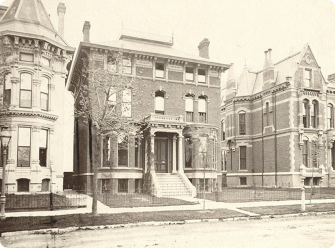

About

About BrickStory
We are preservationists by trade and storytellers at heart. Our reason for existing is to preserve and share the images, stories and ancestral history of the American home. Every home has a story to tell - BrickStory.com is the place to find those stories.
Our Service
Our service is social solution that offers a digitized directory for photos and stories shared about the homes that we have lived in, had experiences at or have historical knowledge of. Through the collective aggregation of information and the engagement of various communities, BrickStory.com is building an online resource for residential and family history and taking the steps to become the leader in story and pictorial documentation of American residences.
BrickStory offers a centralized repository for users to document and update their histories, as well as share those histories for others to browse and view beautiful home photos – inside and out – over various time periods.
Search
When you click on the "Search" tab on the left-hand side, you are able to search all the homes on BrickStory.com. You can refine your search to simply a type of home, age or home size along with a number of other filter options. From here you can navigate your selected homes to find more photos and stories. You can even sort and map the homes that are closest to you.
My Homes
When you click on the "My Homes" tab on the left-hand side, you will see the homes that you personally added. You will see the photo of the home and just below that, the number of homes we have on that home. Here could be a story or a photo or both, of a time and experience you had in and around that home. To see more detail about the home, simply click the image of the home. Here you will find information that has been added about your home, such as who built the home, square footage and what style the home is. From this page, you may Add a New BrickStory to the home or view the Home Timeline - a timeline of the stories, photos and details - the collection of stories and images - for this home!
My Timeline
When you click on the "My Timeline" tab on the left-hand side, you will see the chronological listing of homes that you have lived in.
Know More